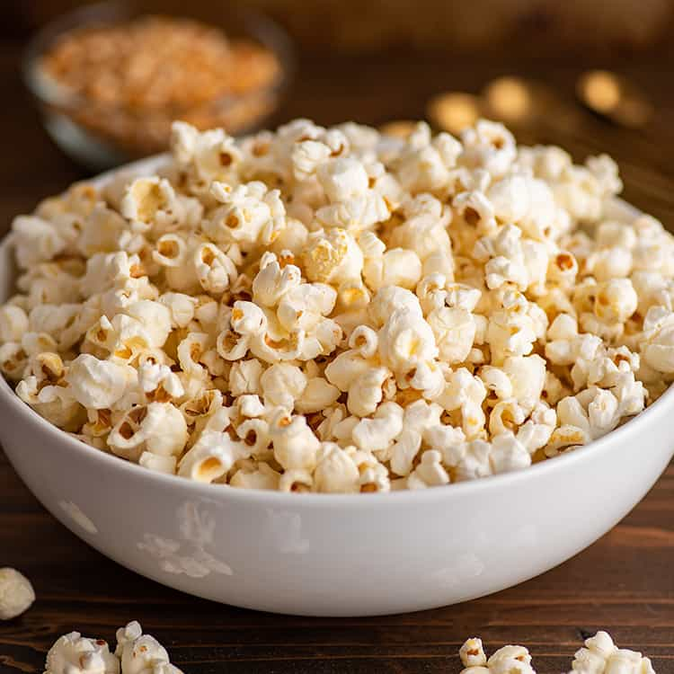

Homemade Kettle Corn

Description
The only difference between popcorn
and kettle corn is a little bit of sugar.
Unlike popcorn, kettle corn is cooked with
sugar, which when heated melts and coats
the popping kernels making them both sweet
and salty.
You don't need any special equipment to make
kettle corn, just a pot or large skillet
with a long handle and a lid. Make sure your
pot is at least three quarts and not to heavy.
Ingredients
- 2 tablespoons vegetable oil (or cooking oil of your choice)
- 1/4 cup popcorn kernels
- 2 tablespoons (25g) granulated sugar
- 1/4 teaspoon salt
Steps
- Set a large bowl on the counter to pour your popped kernel into.
- To a large heavy-bottomed pot (with a lid) add oil and 3 kernels of popcorn. Cover and heat over medium-high heat (medium if your stove runs hot) until you hear all 3 kernels pop.
- Add the rest of your popcorn and shake the pan for a few seconds to coat the kernels. Pour sugar and salt directly over the popcorn. Cover and shake for 3 seconds, rest for 3 seconds, repeat, until popcorn begins to pop steadily.
- Once that starts, shake pan mostly continuously, pausing occasionally to listen for breaks in popping. Once there is about a 2 second break between pops, pull from heat. Transfer popcorn immediately to your bowl.
- Allow to cool for a couple of minutes (sugar will be VERY hot) before eating. Keep an eye out for unpopped kernels as you eat, and enjoy.